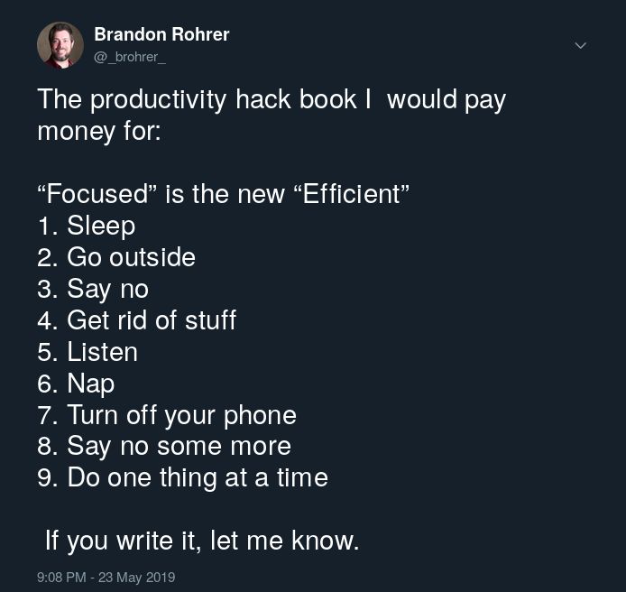

This is a micro book review, kicked off by a tweet:
You suggested books:
- Peace is Every Step: The Path of Mindfulness in Everyday Life, Thich Nhat Hanh
- Flow: The Psychology of Optimal Experience , Mihaly Csikszentmihalyi
- Rapt: Attention and the Focused Life , Winifred Gallagher
- Thinking, Fast and Slow , Daniel Kahneman
- Make Time: How to Focus on What Matters Every Day , Jake Knapp, John Zeratsky
- Essentialism: The Disciplined Pursuit of Less , Greg McKeown
- Subliminal: How Your Unconscious Mind Rules Your Behavior , Leonard Mlodinow
- Deep Work: Rules for Focused Success in a Distracted World , Cal Newport
A quick review
There are many manifestations of mental effort: paying attention to a speaker, noticing the patterns on the wings of a particular butterfly, planning a route to a dinner date, finding the words to express an emotionally fraught idea, puzzling out how toinstall a bathroom light fixture into a space that is half an inch too small. In it's different forms, mental effort is called called attention, deliberation, planning, observation, comprehension. I won't try to present a unified theory of the mechanisms behind these. For now, I’ll simply group them under the label of “focus”.
Focus requires effort. During focus, a brain consumes oxygen, burns calories, and generates chemoelectric activity. We have a limited amount of focus energy. Extended periods of focus result in fatigue. We can increase this capacity over time through practice, but it is always limited.
Focus is active. It is listening rather than merely hearing. Watching rather than seeing. Deliberating rather than reacting. Passive mental activity I'll call "instinct". Focus and instinct are mutually exclusive. We can be in one mode or the other, but not both at the same time.
The reading list above is all about focus and instinct:
- Rapt: Focus is powerful.
- Flow: Instinct is powerful.
- Thinking fast and slow: Both focus and instinct are powerful.
- Subliminal: Instinct is powerful but can also trick you.
- Deep Work: Direct your focus to your work.
- Make time: How to direct your focus to your work.
- Essentialism: Direct your focus to what matters most.
- Peace is every step: How to direct your focus to the world around you.
If you only read one book on this list, read Make Time. It is profound but not preachy. Every book had great stories and great suggestions, but this book had the most useful collection, most accessibly presented.
If you read another, read Peace is Every Step. It's far more practical than it sounds. This was my first exposure to this concept of focus (which it calls Mindfulness). I've adopted a handful of everyday mindfulness practices from it that have changed me in ways too profound to plumb.